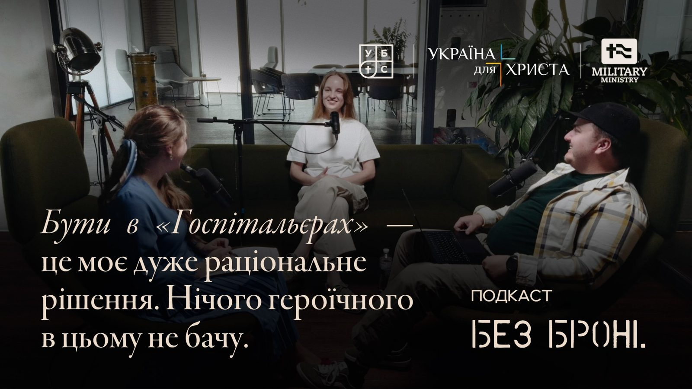

Сезон 1 Епізод 5 ·
Діана Гаврилюк: «Війна навчила мене, що Бог у всьому і скрізь»

Діана — доброволиця медичного батальйону «Госпітальєри» і студентка УБТС за програмою «Християнське консультування». Виросла в пасторській сім'ї. Розмова про шлях від волонтерства за кордоном до евакуації поранених, про те, чому в цьому немає нічого героїчного, про вразливість, невідфільтровану молитву і Бога, який присутній у всьому.
Діяльність у добровольчому батальйоні передбачає, що ти можеш припинити в будь-який момент. І абсолютно кожна ротація — це моє власне волевиявлення… Щоб я зробила щось героїчне, мені треба було б хіба що зійти з глузду. А все, що я роблю зараз, — в межах раціональності, здорового глузду і мого покликання. Тому я в цьому нічого героїчного не бачу.
Знайомство
Надя: Цей подкаст створений у співпраці Української баптистської теологічної семінарії та місії «Україна для Христа». І ми раді вітати сьогодні в нас у гостях Діану Гаврилюк. Діана — доброволиця батальйону «Госпітальєри» і, що нам особливо приємно, студентка УБТС за програмою «Християнське консультування». Діано, ми раді, що ти сьогодні з нами.
Діана: Навзаєм.
Надя: Я щойно тебе представила. Коли ми дивимося на тебе, молоду дівчину, і чуємо: «Доброволиця, медичний батальйон «Госпітальєри», евакуює поранених, надає першу домедичну допомогу», — одразу малюється образ такої чіткої, сміливої дівчини. Але я хочу почати здалеку. Розкажи, що сформувало тебе до того моменту, коли ми зустрілися? Що зробило тебе такою, якою ти є?
Сім'я і цінності
Діана: Люди. На сто відсотків люди. Насамперед сім'я, в якій я народилася. Великий внесок у моє формування зробили батьки. Мені дуже пощастило: мої батьки — дуже якісні люди, якщо так можна сказати. Дуже посвячені: по-перше, Богу, по-друге, одне одному, по-третє, своєму служінню. І відповідно — мені й моїй молодшій сестрі. Коли люди самі сформовані й мають чіткі цінності, вони передають ці цінності дітям. А коли діти виростають, як у моєму випадку, вони свідомо вирішують прийняти ці цінності для свого життя й їм слідувати. Тому батьки, друзі, моє близьке коло, семінарія, одногрупники, церква — будь-яке середовище, де я серед людей, мене формує. Мабуть, Бог найбільше працює в мені через людей.
Олександр: Цікаво, що дівчина, яка виросла в пасторській сім'ї, вирішила йти в «Госпітальєри». У який момент ти зрозуміла, що не можеш залишатися осторонь? Бо це не дуже типова картина.
Діана: Важко сказати. Мені вона якраз здається дуже типовою, бо я виросла в певній атмосфері. Для мене це логічно: все життя я спостерігала, як батьки, довіряючи Богу, робили те, що Він їм наказував. І бачила, що попри труднощі й випробування це приносить наповнення і радість життя. Тож коли опиняєшся в таких обставинах, як війна, розумієш, що осторонь лишатися точно не можна. Якщо дитина росте в сім'ї глибоко посвячених християн, то результат — її свідомі й сміливі рішення, коли вона виростає.
Олександр: Але ти могла служити в церкві, далі допомагати переселенцям і так далі.
Діана: А чого ж ви це раніше не сказали? Могла б, могла б! Але тут уже вступає в гру моя власна життєва філософія: виходячи зі свого контексту й наявних ресурсів, ти вирішуєш, де тобі найраціональніше бути зараз. Я оцінила свою життєву ситуацію і зрозуміла, що на цьому етапі логічно бути в батальйоні. Хоча це був дуже поступовий шлях: від волонтерства для України за кордоном до роботи напряму з військовими. Мабуть, помаленьку піднімалася по всіх сходинках.
Сходинка за сходинкою
Надя: Розкажи, будь ласка, про ці етапи. Скільки тобі було, коли почалася повномасштабна війна? Двадцять. Ти волонтериш за кордоном — як у тобі з'являється ідея йти доброволицею?
Діана: Повномасштабна війна застала мене на навчанні за кордоном, за два місяці до закінчення університету. Перша реакція, як у більшості, — все кинути й їхати в Україну. Але батьки переконали довчитися два місяці й отримати диплом. Поки я вчилася, ми зі студентами організували хаб, куди звозили допомогу для українців.
У травні я приїхала додому й долучилася до волонтерського центру при нашій церкві: видавали продуктові набори, готували обіди, проводили спілкування для переселенців. Потім почала їздити на евакуацію цивільних із прифронтових територій — ми працювали в Бахмутському районі під час важких боїв. Потім багато разів їздила на ротації з командою стоматологів асистенткою — мій дядько стоматолог. А коли проєкт розширився і моя роль там зменшилася, наступним логічним кроком було брати на себе більше відповідальності. «Госпітальєри» стали дуже логічним рішенням. Кожна сходинка — це більший рівень відповідальності.
Олександр: А я в 20 років їздив на море і їв шаурму… Я б теж те саме робив, якби не війна! Бачиш, уже виправдав себе в голові. Але дивись: між тим, як з'являється рішення піти в «Госпітальєри», і тим, як ти стаєш госпітальєркою, минає рік — бо батьки проти. Як виглядали ваші дискусії і як ти їх переконала?
Діана: Я не переконувала їх — це не моє діло, вони мали вирішити це питання з Богом. Перші розмови були досить конфліктними. Але в якийсь момент я знайшла короткий курс у Києві, записалася і просто поставила батьків перед фактом, що їду на навчання. І тато каже: «Давай я тобі його оплачу». І я зрозуміла, що вони переходять на стадію прийняття й довіри.
Перша ротація
Надя: Які в тебе були уявлення про передову і якою виявилася реальність?
Діана: Оскільки до цього я їздила з мобільною стоматологією дуже близько до лінії фронту і заставала прильоти, для мене це не було чимось кардинально новим.
Надя: І все ж перша ротація завжди запам'ятовується. Вона була для тебе особливою?
Діана: Пам'ятаю випадок із першої ротації. Поранений чоловік, усе тіло перемотане, опіки від голови до ніг, волосся позгорало, майже не говорив. Мені треба було сфотографувати його форму 100 на його ж телефон, щоб документ не загубився. Дістаю з його зіп-пакета телефон — він у землі, а на заставці фотографія: він, поруч дружина, на руках синочок, а на колінах донечка. Я дивлюся на це фото — і в мене ком у горлі і спазм у животі. Бо розумію, що ці люди, скоріше за все, ще не знають, у якому стані їхній чоловік і батько. У той момент мені відкрилося: це не просто поранений пацієнт, а людина, у якої є родина, зв'язки, почуття. Найважче — коли пацієнт отак олюднюється.
Саме тоді мені прийшло повідомлення від дядька: «Діано, як ти?» Це було так вчасно і важливо. Я зрозуміла, як важливо тягнутися до людей — до сім'ї, друзів.
А ще великий внесок у мою емоційну стабільність має звичка писати нотатки після евакуацій. Письмова рефлексія допомагає викласти думки в структурованій формі, зняти тягар із душі й перетворити це на новий досвід чи детальку власного світогляду.
Як відновлюватися
Надя: Чи є речі, які ти бачила і які досі емоційно тебе не відпускають?
Діана: Немає. Думаю, поки що мої методи відновлення працюють досить добре: мої рефлексії, моя сім'я — тато, мама, сестра, моє безпечне коло, де я максимально розслаблена. І друзі з розвиненим емоційним інтелектом, які приїжджають після ротацій і повертають мене до звичайного життя.
Надя: А чи дозволяєш ти собі плакати?
Діана: Мені складно. Я поважаю здатність людей плакати і розумію, яка важлива ця функція для фізичного й психологічного здоров'я. Але сама є заручницею певних стереотипів щодо себе.
Надя: Твоя ціль — залишатися вразливою. Чи це реалістично?
Діана: Щоб залишитися вразливою, треба спочатку нею стати. Як сказав Клайв Льюїс, любити — це в принципі означає бути вразливим. А я дуже люблю це життя. Вразливість — це вияв любові до людей і до життя загалом. Через вразливість ти підтверджуєш щирість своєї любові.
Через вразливість ти підтверджуєш щирість своєї любові.
Звичайні люди, а не титани
Олександр: Яких людей ти бачила на війні?
Діана: Усі, кого я бачила, — дуже звичайні й прості люди. У них було своє життя, цілі, плани, які вони з власної волі чи ні поставили на паузу і тепер намагаються вибороти право жити далі.
Олександр: Чи бачиш ти тенденцію міфологізувати військових як «титанів» або, навпаки, знецінювати їх?
Діана: У 2022–2023 роках військових змальовували як супергероїв і титанів, і це створювало дистанцію між ними та суспільством. А зараз з'явилася інша, ще гірша тенденція — знецінення, коли дехто починає сприймати службу як «затрачене життя». Це наслідок хибної міфологізації з самого початку — замість того, щоб бачити у військовому звичайну людину зі своїм болем і слабкостями.
Невідфільтрована молитва
Надя: Як виглядає твоя молитва вдома і як вона звучить на ротаціях?
Діана: До батальйону в мене була схильність дещо приправляти молитви красивими чи літературними словами. Зараз я набагато більше дозволяю собі абсолютно невідфільтрованих молитов: виражати все, що на серці, і не боятися говорити Богу все прямо.
Війна навчила мене більше усвідомлювати Божу всюдиприсутність і Його велич. Якщо раніше я шукала цю велич в архітектурі храмів чи в музиці, то на війні бачу, що Бог присутній абсолютно в усіх процесах: і поруч зі мною, і з пораненими, які вибираються з позицій, і навіть у глобальних подіях.
Життя, смерть і покликання
Олександр: Як змінилося твоє ставлення до життя і смерті?
Діана: Життя я почала любити ще більше. А смерть стала ближчою і реальнішою. Хоча на моїх евакуаціях, слава Богу, жоден пацієнт не загинув, втрата близьких навчила мене, що кожна смерть дається важко. Психологічно найважче приймати смерть, коли вона є наслідком навмисного рішення іншої людини забрати життя.
Надя: Як би ти сама описала своє покликання?
Діана: Я використовую свої дари там, де вони зараз найефективніші. Я люблю вчитися, тому мені легко засвоювати медичні знання. А ще я добре вмію слухати: під час евакуацій я активно слухаю поранених, і це допомагає їм вивільнити свій біль.
Олександр: Як у тобі поєднуються патріотизм і християнство?
Діана: Дуже просто. Бути громадянином країни означає, що поруч є інші люди, теж громадяни. А хто це? Ближні. А що Біблія каже робити з ближнім? Любити і служити. От я цим і займаюся — просто живу за Біблією.
Три поради українським християнам
Надя: Які три ключові речі ти хотіла б сказати українським християнам?
Діана:
- Вертикаль. Майте добре налаштовану вертикаль з Богом. Вкорінюйте в Ньому свою ідентичність і світогляд, розвивайте стосунки з Ним.
- Горизонталь. Вкладайте в стосунки з людьми поруч. Знайдіть військового чи військову, підтримуйте їх, телефонуйте, будьте для них місцем безпеки й відновлення.
- Читайте і наповнюйтеся. Читайте багато Біблії й добрих книжок — Клайв Льюїс, Ремарк, Стус, Симоненко, Тім Келлер. У критичні моменти цитати й істини залітають у голову і дають сили вистояти. Для мене такою фразою стали слова Стуса: «Терпи, терпи — терпець тебе шліфує».
Текстова версія підготовлена з уже скороченої транскрипції, а не з дослівного запису. Репліки ведучих у файлі не підписані: певно визначені лише вступ і перше питання (Надя) та репліка про море й шаурму (Олександр), решта розподілена приблизно.